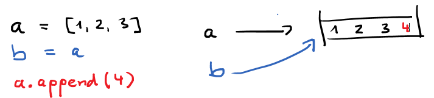
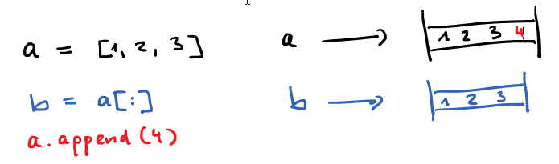
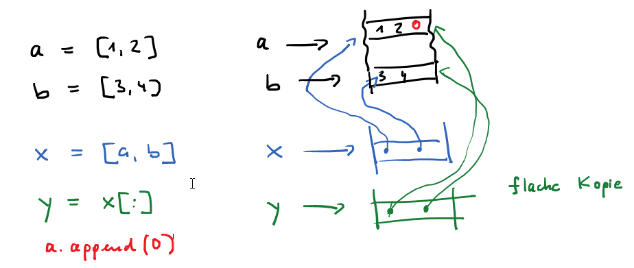
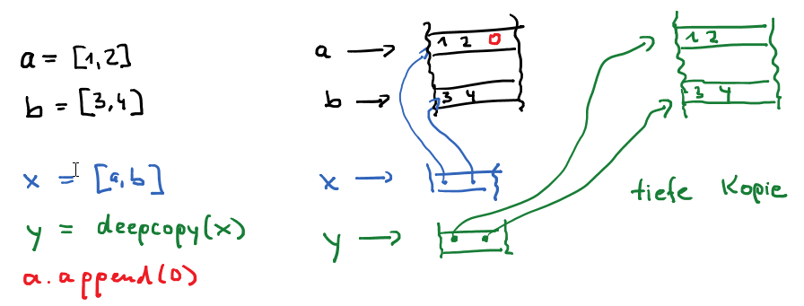
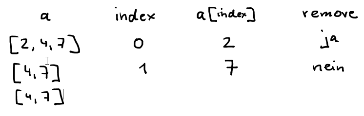
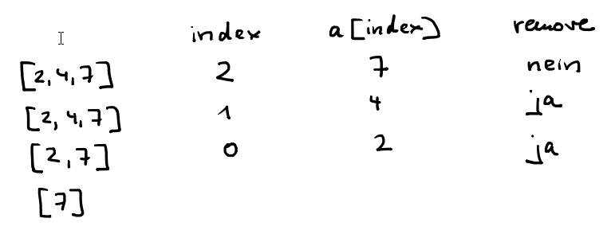
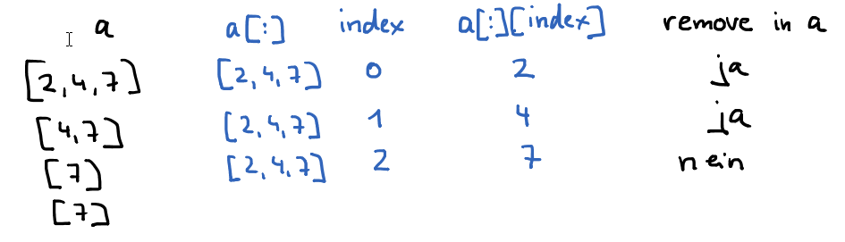

>>> a = []
>>> b = [2,'hallo',5,True]
>>> len(b)
4
>>> b[2] # Zugriff durch Index
5
>>> b[4] # Fehler wenn Index zu groß
Traceback (most recent call last):
File "<pyshell#4>", line 1, in <module>
b[4]
IndexError: list index out of range
>>> b[1] = 42 # lists sind mutable
>>> b
[2, 42, 5, True]
>>>
Zwei Arten, eine Liste zu durchlaufen:
a = [3, 5, 14, 42, 9]
for i in range(len(a)): # mit Index
print(a[i])
for x in a: # ohne Index
print(x)
Quiz 9
Einige Funktionen und Methoden von Listen
>>> a = [2,4,3] >>> a.append(5) # Liste um ein Element erweitern >>> a [2, 4, 3, 5] >>> b = [7,4] >>> c = a + b # zwei Listen konkatenieren >>> c [2, 4, 3, 5, 7, 4] >>> a.extend(b) # a wird um eine Liste erweitert >>> a [2, 4, 3, 5, 7, 4] >>> a.index(4) # nach der 4 suchen 1 >>> a.index(4,2) # nach der 4 ab Index 2 suchen 5 >>> a.remove(4) # die erste 4 löschen >>> a [2, 3, 5, 7, 4] >>> a.remove(1) # Fehler, wenn Element nicht in Liste Traceback (most recent call last): File "", line 1, ina.remove(1) ValueError: list.remove(x): x not in list >>> del(a[2]) # Element mit Index 2 löschen >>> a [2, 3, 7, 4] >>> x = a.pop() # löschen und rückgabe des letzten Elements >>> x,a (4, [2, 3, 7]) >>> a.insert(0,5) # die 5 ganz vorne einfügen >>> a [5, 2, 3, 7] >>> a.insert(2,9) # die 9 an Indexposition 2 einfügen >>> a [5, 2, 9, 3, 7] >>> a.insert(100,1) # die 1 ganz hinten einfügen (Index darf zu groß sein) >>> a [5, 2, 9, 3, 7, 1] >>> a.reverse() [1, 7, 3, 9, 2, 5] # Liste umdrehen
Comprehensions sind spezielle Anweisungen, mit denen man Listen erstellen kann.
>>> a = list(range(10)) >>> a [0, 1, 2, 3, 4, 5, 6, 7, 8, 9] >>> [x for x in a if x%3==0] [0, 3, 6, 9] >>> [x*x for x in a] [0, 1, 4, 9, 16, 25, 36, 49, 64, 81] >>> a = [1,2,3] >>> [x*10+y for x in a for y in a] [11, 12, 13, 21, 22, 23, 31, 32, 33] import random # Liste mit 100 Zufallszahlen zwischen 0 und 1000 a = [random.randint(0,1000) for i in range(100)]
Aus Strings können Listen entstehen und umgekehrt
>>> s = 'Im traurigen Monat November wars'
>>> a = s.split()
>>> a
['Im', 'traurigen', 'Monat', 'November', 'wars']
>>> a = s.split('Monat')
>>> a
['Im traurigen ', ' November wars']
>>> a = ['e','f','g']
>>> ''.join(a)
'efg'
>>> '_'.join(a)
'e_f_g'
Listen sortieren
>>> a = [3, 1, 2] >>> b = sorted(a) # a wird nicht verändert >>> b [1, 2, 3] >>> a.sort() # a wird verändert >>> a [1, 2, 3] >>> a.sort(reverse=Trze) >>> a [3, 2, 1]
Jede Variable, die auf ein Listenobjekt zeigt, das verändert wird, ist betroffen (Seiteneffekte).
>>> a = [1,2,3] >>> b = a >>> a,b ([1, 2, 3], [1, 2, 3]) >>> a == b # a und b haben gleichen Inhalt True >>> a is b # sie sind dasselbe Objekt True >>> a.append(4) # a wird verändert >>> a,b ([1, 2, 3, 4], [1, 2, 3, 4]) # dadurch verändert sich auch b (Seiteneffekt)
>>> a = [1,2,3] >>> b = a[:] # Vermeiden von Seiteneffekten durch Cloning >>> a == b # a und b haben gleichen Inhalt True >>> a is b # aber sind verschiedenen Objekte False >>> a.append(4) >>> a,b ([1, 2, 3, 4], [1, 2, 3]) >>>
Seiteneffekte bei Listen von Listen
>>> a = [1,2] >>> b = [3,4] >>> x = [a,b] >>> y = x[:] # y ist flache Kopie von x >>> x,y ([[1, 2], [3, 4]], [[1, 2], [3, 4]]) >>> a.append(0) # a wird verändert >>> x,y # damit ändern sich x und y ([[1, 2, 0], [3, 4]], [[1, 2, 0], [3, 4]])

>>> from copy import deepcopy >>> a = [1,2] >>> b = [3,4] >>> x = [a,b] >>> y = deepcopy(x) # Vermeiden von Seiteneffekten durch tiefe Kopie >>> a.append(0) # a wird verändert >>> x,y # nur x wird dadurch verändert ([[1, 2, 0], [3, 4]], [[1, 2], [3, 4]])
Iterieren und Löschen in derselben Liste ist nicht gut.
>>> a = [2,4,7]
>>> for x in a:
if x % 2 == 0:
a.remove(x)
>>> a
[4, 7] # die 4 wurde nicht gelöscht

>>> a = [2,4,7]
>>> for i in range(len(a)-1,-1,-1): # rückwärts durch die Liste gehen
if a[i]%2 == 0:
a.remove(a[i]) # oder del(a[i])
>>> a
[7] # alle geraden Zahlen sind gelöscht

>>> a = [2,4,7]
>>> for x in a[:]: # über ein Kopie iterieren
if x % 2 == 0:
a.remove(x)
>>> a
[7] # alle geraden Zahlen sind gelöscht

Quiz 10